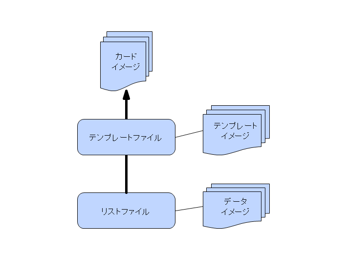
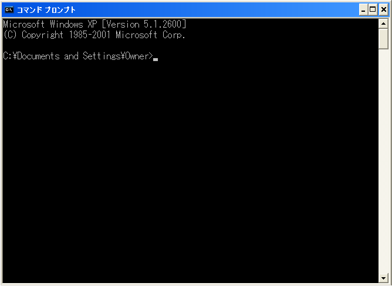
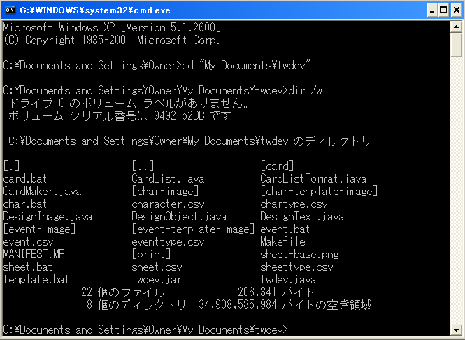
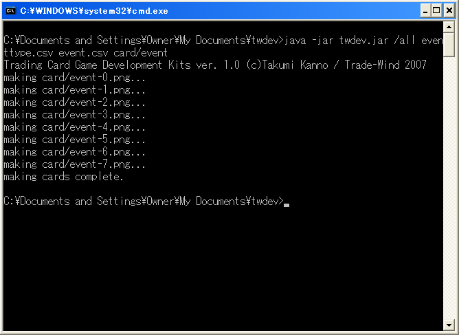
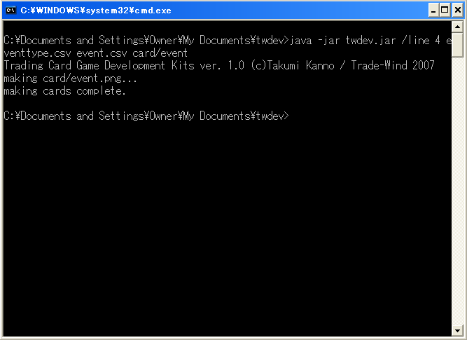
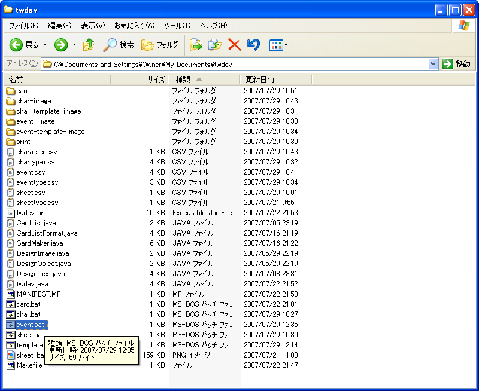

elder-alliance.org > Trade-Wind式 オリジナルTCG開発環境 > 利用ガイドライン > 例題：おとボクTCGプロジェクト
Trade-Wind式 オリジナルTCG開発環境「twdev」（以下、本プログラム）の利用方法について、説明いたします。
目次

本プログラムは、イメージ出力を専門とする、簡易型のデータベースです。
テンプレートとリストを用いて、カードイメージを出力します。
本プログラムは、コマンドラインから利用します。 コマンドラインとは、以下の方法で用います。
まず、「スタートメニュー」→「プログラム」→「アクセサリ」→「コマンド プロンプト」を選択します。

図：コマンドプロンプト画面
次に、cd コマンドを利用して、twdevがインストールされているフォルダへアクセスします。 アクセスできたことを確認するために、dirコマンドを用いてフォルダの内容を確認すると良いでしょう。

図：フォルダアクセス画面
ここで、テンプレートファイルとリストファイルを指定して、twdevを動かします。 テンプレートファイルとリストファイルの作り方は、プログラムの仕様、または、例題：おとボクTCGプロジェクトをご覧下さい。 以下、テンプレートファイルを"eventtype.csv"、リストファイルを"event.csv"としてtwdevを操作します。
まずは、リストの全てをカードへ出力する方法です。
> java -jar twdev.jar /all eventtype.csv event.csv card/event
こう入力すると、テンプレートファイルとリストファイルから、 cardフォルダ、ファイルevent-*.png（*には数字が入ります）に、カードファイルが作成されます。

図：twdev実行画面（リストファイル全データ）
ただし、この操作は時間が掛かりますので（大きなファイルであるほど、時間の掛かり方は顕著です）、 しばらくお待ち下さい。
このとき、余計なカードファイルを生成するから時間が掛かるため、 リストファイルの特定の列のみからカードファイルのみを生成することも考えられます。 たとえば、5行めのカードのみを再生成したい場合は、
> java -jar twdev.jar /line 4 eventtype.csv event.csv card/event
のコマンドを入力する（twdevは行数を0から数える仕様ですので、5行目を4と指定しています）と、

図：twdev実行画面（リストファイル特定データ）
として、上と同じように、ファイルevent.pngが生成されます。 この場合、数字は付与されません。
この利用方法は、リストファイルの部分更新を行った場合にとくに有効です。
上記操作を簡単にするため、MS-DOSのバッチファイルを利用することが考えられます。 たとえば、
java -jar twdev.jar /all eventtype.csv event.csv card/event
と書かれたバッチファイルを用意して、ダブルクリックで実行すると、 上記コマンドプロンプトの起動が不要になります。

図：バッチファイルの準備
バッチファイルを実行すると、処理終了後にウィンドウが消えてしまうため、 処理が正常に終了したか、異常終了してしまったかの区別が非常に付きづらくなってしまいます。 これを避けるため、ログファイルを定義し、そこにデータを出力する方法を考えます。
java -jar twdev.jar /all eventtype.csv event.csv card/event > eventcardlog.txt 2>&1
と書かれたバッチファイル（基本からの差分を赤字で表示。以下同じ）を用意すると、 直前に実行したtwdevの表示が、代わりにeventcardlog.txtに出力されます。 このコマンドの意味は、UNIXにおけるbashと同等なので、興味のある方はお調べいただけると幸いです。 もちろん、eventcardlog.txtは、別の名前でもかまいません。 このとき、拡張子を.txtにしておくと、メモ帳と関連づけられるため読みやすいでしょう。
また、ログを累積して取得したい場合は、
java -jar twdev.jar /all eventtype.csv event.csv card/event >> eventcardlog.txt 2>&1
とすると、eventcardlog.txtに出力されたログが追記されていきます。
処理するファイル数やファイルサイズが大きい場合、あるいは、カード出力の記録を取っておきたい場合など、 上記ログに時刻を書いておくと有用な場合があります。
このとき、MS-DOSのコマンド"date"や"time"を利用して、 ログに時刻を出力してあげると見やすいでしょう。
date /t >> eventcardlog.txt time /t >> eventcardlog.txt echo ----------------------- twdev compile start ----------------------- >> eventcardlog.txt java -jar twdev.jar /all eventtype.csv event.csv card/event >> eventcardlog.txt 2>&1 echo ----------------------- twdev compile end ------------------------- >> eventcardlog.txt date /t >> eventcardlog.txt time /t >> eventcardlog.txt
と書かれたバッチファイルを用意しておくことで、 ログに日付と時刻が出力されます。
環境またはバージョンによって、twdevは大変処理が重くなることがあるため、 とくに処理するファイル数やファイルサイズが大きい場合、 （人間から見て）効率の良い処理のためには、 お出かけやおやすみのときにtwdevを実行してパソコンを放置する手段が有効な場合があります。 （電力やトラブルシューティングなどの異常系は考えられていません。あしからず）
このとき、MS-DOSのコマンド"shutdown"を利用して、 バッチファイルの実行完了とともにパソコンの電源を落とす方法が考えられます。
java -jar twdev.jar /all eventtype.csv event.csv card/event > eventcardlog.txt 2>&1 shutdown -s -f
と書かれたバッチファイルを用意しておくことで、 Windowsが、バッチファイルの実行完了とともにパソコンの電源を落としてくれます。 （起動後に状況を確認できるよう、前項のeventcardlog.txtへの出力は残してあります。もちろん、消していただいてもかまいません）
テンプレートとは、イメージ出力のための型のことを言います。 テンプレートは単なる型に過ぎないため、型に当てはめるべきデータであるリストがあって初めて役に立ちます。
テンプレートは、テンプレートファイル、および、それぞれに付随するイメージファイルによってなります。
テンプレートファイルは、指定された項目をもつCSV形式をとります。 CSV形式とは、テキストで表される表形式のことで、半角カンマで列の区切りを、改行で行の区切りを示します。
CSV形式の1行目は、次の表現に固定されます。
"Alias","x","y","width","height","Type","Data","Text Align(Text)","Vertical Align(Text)","Font Face(Text)","Font Style(Text)","Font Size(Text)","Font Color - R(Text)","Font Color - G(Text)","Font Color - B(Text)"
ver.1.0現在、データの中身は意味を持ちません。順番と個数のみがものを言います。
CSV形式の2行目以降は、いくつかの固定された形式から、一つを選択します。
基本イメージとは、カードの全体的な大きさを規定するイメージファイルです。 必ず１回だけ指定してください。
イメージファイルは、背景色（通常は白または黒の単色）によって構成されます。 また、カードの大きさ・解像度などは、すべてこのイメージファイルの大きさによって決まります。
形式：
例：
"背景色",0,0,978,1346,"Base","base.png"
イメージとは、カードに描画するイメージファイルです。 対応しているフォーマットは、bmp、gif、jpg、pngです。
イメージファイルは、背景色（通常は白または黒の単色）によって構成されます。 また、カードの大きさ・解像度などは、すべてこのイメージファイルの大きさによって決まります。
形式：
例：
"キャラクターイラスト",100,248,617,702,"Image","character-illust-space.png"
テキスト、あるいは文字列とは、カードの全体的な大きさを規定するイメージファイルです。
イメージファイルは、背景色（通常は白または黒の単色）によって構成されます。 また、カードの大きさ・解像度などは、すべてこのイメージファイルの大きさによって決まります。
形式：
例：
"特殊能力",110,960,756,244,"Text","nouryoku",,,"Default Sans Serif","Regular",28,0,0,0
リストは、イメージ出力を行うデータのことです。 リスト単体ではイメージ出力の方法を定めることができないため、テンプレートがあって初めて役に立ちます。
リストは、リストファイル、および、それぞれに付随するイメージファイルによってなります。
リストファイルは、テンプレートファイルにより形式を決定づけられるCSV形式ファイルです。
一行目には、テンプレートファイルの各項目の「別名」を列挙します。
二行目以降は、それぞれの「別名」が上げられた項目にあてはめるデータを、それぞれ列挙します。
こうすることで、リストファイルのデータが、カードに出力されるデータベースとして利用可能となります。
例えば、テンプレートファイルが、
"Alias","x","y","width","height","Type","Data","Align(Text)","Vertical Align(Text)","Font Face(Text)","Font Style(Text)","Font Size(Text)","Font Color - R(Text)","Font Color - G(Text)","Font Color - B(Text)" "背景色",0,0,978,1346,"Base","base.png" "イベント名ウィンドウ",100,100,500,100,"Image","event-name-window.png" "イベント名",100,100,500,100,"Text","イベント名",,"Center","Default Sans Serif","Regular",64,0,0,0 "イベントカード種別表示",745,235,119,135,"Text","event","Center",,"Default Serif","Regular",28,0,153,68 "イラストファイル",112,280,751,422,"Image","event-illust-space.png"
であるとき、これに対応するリストファイルは、たとえば、
"イベント名","イラストファイル" "大は小を兼ねる","illust/kana001.png" "ティータイム","illust/kana002.png"
と書きます。こうすることで、テンプレートファイルの、「イベント名」と「イラストファイル」の項目は、置き換え可能なデータを持ちます。
詳しい実例は、例題：おとボクTCGプロジェクトをご覧下さい。
{kind=link}